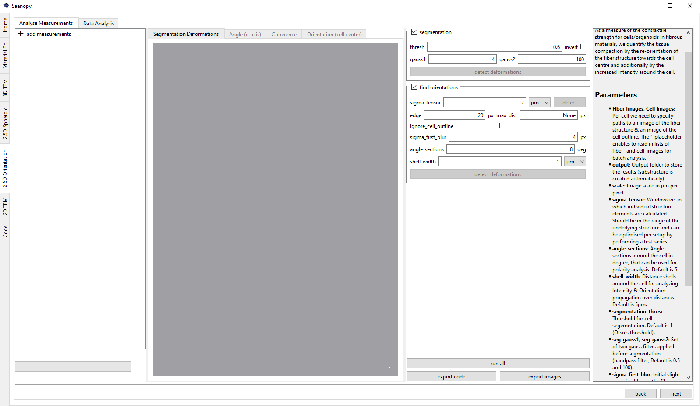
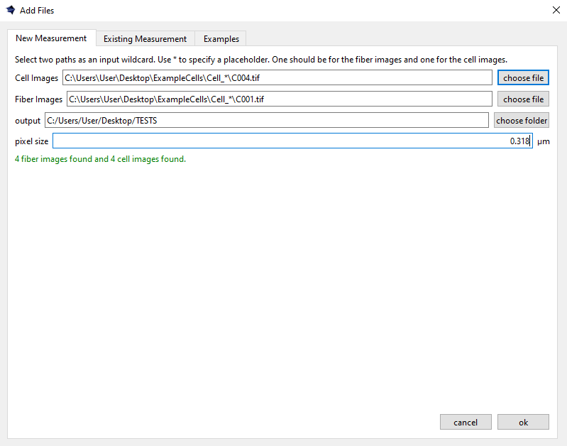

Interface¶
Calculate the alignment and intensity of matrix fibers directed toward a cell embedded in a 3D biopolymer, based on 2D images. This measurement serves as an indirect proxy for cell contractility.
In the Orientation interface, choose Relative to Cell, Relative to X and Y Axes or Relative to a Point or Line. The cell workflow keeps the original contractility analysis. The axis workflow uses the fiber channel for the structure tensor and can restrict the evaluated region with a mask. The point workflow measures radial alignment towards a reference selected by one click. The line workflow uses two clicks to define one reference direction for the whole image. Select Point or Line in the import dialog. The welcome choice disappears after entering the workflow. All choices remain available whenever adding measurements. The axis workflow offers three choices side by side in the image dialog:
Whole image: select Orientation Images only.
Mask from the same image: select Orientation Images only; each image also supplies its own mask.
Mask from a second image: select Orientation Images and matching Mask Images. The second image only selects the area; orientation is calculated exclusively from the orientation image.
The two masked cases share the mask preview, analysis and result tabs. For a same-image mask, adjust blur and threshold to select the cell area, rather than only thin bright fibers. Inspect the preview; this intensity mask does not automatically separate individual cells. The configured edge crop still applies. Each measurement retains its own mode. Selecting a measurement updates its parameters and tabs. The Angle tab appears before Coherency in every mode, with an X/Y reference switch; line measurements also offer Line.

Adding Measurements¶

Loading a New Measurement¶
Batch searches of image pairs of the matrix structure (fiber images) and the cell outline (cell images) can be performed using placeholder “*” to enable open searches across different folders, allowing them to be read in parallel.
Further, the pixelsize and an output directory for results plots and python data files needs to be defined here.
Loading an Existing Measurement¶
Load .saenopyOrientation files through this tab, or drag files or folders
into Analyse Measurements. To compare their statistics, drag the same evaluated
files into Data Analysis, where they are added to the selected group.
Version 1.0 files remain readable as cell-relative measurements. The newer
files additionally store the axis mode, mask and histogram. Changing the image
labels to Orientation Images and Mask Images does not require a format change.
Keep the image folders with portable result files. The .saenopy extension
belongs to 3D TFM; do not rename orientation results to that extension.
The Orientation window can be resized down to 900 × 600 pixels. Drag the dividers to adjust group lists, plots and help. The Help button hides or restores the description, whose colors follow the active Qt theme.
Loading an Example Measurement¶
This tab provides example files that can be downloaded to showcase and test various applications of saenopy. Files will be downloaded to a user directory and directly opened in saenopy.
Whole image: collagen (EmptyCollagen) contains two empty collagen fields
at 0.249 µm/pixel, analyzed without a mask or artificial cell center.
Same-image mask: phalloidin (FibroblastActin) contains two fibroblast fields
at 0.48 µm/pixel, analyzed within masks derived from those same images.
For either example, Open creates two measurements with preset parameters;
run find orientations to calculate them. Open (evaluated) opens the two
prepared results directly, including maps and histograms.
Second-image mask: alpha-actinin selects cardiomyocytes in a culture with fibroblasts. Orientation is measured from phalloidin-labeled actin within the alpha-actinin mask (0.156 µm/pixel). CellFibers provides the original cell-relative collagen example.
The Spheroid center and Cardiomyocyte line examples show alignment to a selected point or line. Use Open (evaluated) to inspect their results, or change the reference and run find orientations again.
The phalloidin image is used both for fiber analysis and to select stained
regions. This is an intensity mask, not an independent cell-outline stain or
individual-cell segmentation. Inspect the mask preview. The phalloidin package
also includes whole-image controls in example_output/whole_image for a
comparison through Existing Measurement. These paired variants are not
independent biological samples.
Downloaded examples include input images and prepared result files. Keep the
image folders with the results when moving them. Use Open (evaluated) or
load the .saenopyOrientation files through Existing Measurement.
Axis measurements¶
For a second-image mask, the image must be registered to the fiber image, with the same dimensions, position, and z slice or MAX projection. Lists are paired in sorted filename order; check their pairing before analyzing a batch. The mask retains all selected regions, without a largest-cell rule. The fiber image is never masked before the tensor calculation, avoiding artificial orientations at mask edges.
Use preview mask to inspect the mask blur and threshold. Changing the preview does not change an existing analysis; use find orientations again to recompute its validity mask, summary and plots. Cell-specific radial, sector and shell controls are hidden in axis mode. Old saved measurements load in cell mode, regardless of the choice for new measurements.
The Angle tab has an X/Y reference switch and uses degrees in [-90, 90). The Axis alignment tab has the same switch and a fixed -1 to +1 color scale. The Segmentation / mask tab shows a transparent red fill and outline over selected regions, including preview masks. These display choices do not alter the saved angle maps or validity masks.
x is horizontal and y is vertical; positive x angles slope upwards to the right. The minimum tensor eigenvector already gives the fiber direction. The alignment tab uses +1 for parallel, 0 at 45 degrees and -1 for perpendicular. x and y alignment are opposite. Histograms are shown only in Data Analysis. Histograms and per-image means count each finite selected pixel equally.
The save plots and save NumPy arrays + CSV checkboxes are independent.
Axis plots include x/y angle overlays and an angle histogram; masked mode adds
side-by-side channels and a mask check. NumPy export includes raw angles and
vectors, coherency, the fiber crop and x/y alignment. Masked mode also saves
ValidityMask.npy; its alignment arrays have NaN outside that mask. Raw angle
arrays are unchanged, so apply the validity mask when reading them directly.
results_axis.csv includes unweighted and explicitly named weighted means;
histogram_axis.csv contains bin edges and counts. No cell-distance tables
are generated. The .saenopyOrientation result is always saved, including
the mode, analyzed mask and statistics. Use separate output folders for modes.
Data Analysis offers Alignment to X axis, Alignment to Y axis, Angular deviation to X axis and Angular deviation to Y axis group plots. Metrics are greyed out when the checked images and groups do not provide values for them. Mixed selections can enable both cell-relative and image-axis metrics; each plot uses only the relevant measurements. Alignment plots keep a fixed -1 to +1 y-axis in the GUI and exported Python code. Angular deviations range from 0 degrees (parallel to the reference axis) to 90 degrees (perpendicular). They average absolute axial deviations, not signed angles across the -90/+90 wrap. Each image contributes one equal-pixel mean, and group means weight images equally. Coherency is available in all measurement modes, with a fixed 0 to 1 axis in the GUI and exported plots. It averages local directional consistency within each image’s analyzed region, independently of the X/Y or cell-center direction. A value of 0 is isotropic and 1 is strongly directional within the tensor window; different regions of an image can still point in different directions. Masked measurements include only the saved mask. Existing axis results use their saved coherency maps, so no new orientation calculation is required. Empty or missing coherency data are excluded rather than treated as zero. Angle histogram x/y first normalizes the histogram of each nonempty image, then plots group means with SEM across images, expressed as Probability. Each bin is the fraction of valid pixels within that angular interval, between 0 and 1. Each image’s bins sum to 1; the plotted y-axis is scaled to the distribution. These are probabilities per bin, not probability densities per degree. The CSV fraction column and exported plotting script use the same normalization. Raw pixel counts are not pooled; larger images or masks do not receive extra weight. Empty histograms are excluded. For cell analyses, mean cell-relative deviation complements the original orientation and distance plots. Export saves a runnable Python plotting script with an embedded table or a separate CSV, including grouped histograms. Cell-relative and axis-relative values are different measurements; unavailable metrics are left empty, not replaced by zero. Do not treat z slices and their own MAX projection as independent samples.
Export code reproduces the active measurement’s mode and parameter settings. The original screenshots above illustrate the cell workflow.
Orientation towards a point¶
Choose Relative to a Point or Line, select Point, and load an orientation image. Optionally select a mask from the same image or a second image. In the Reference point tab, click Choose reference point and then click the image. The yellow marker uses original image coordinates (X to the right, Y downwards). Set a separate reference for each image. Run find orientations to calculate and save the results.
The radial geometry is the same as in the cell-center analysis. Alignment is +1 radial, 0 at 45 degrees and -1 tangential. The reference pixel itself has no radial direction and is excluded from point-relative means. The result map marks the analyzed reference; moving the point in the first tab creates a pending change until the analysis is run again.
Data Analysis provides Alignment towards point and Angular deviation to point, with fixed -1 to +1 and 0 to 90 degree scales. X/Y alignment, angular deviation, angle histograms and coherency remain available. Exported Python analysis code includes the selected point.
Set shell_width to compare alignment, angular deviation and coherency in
concentric rings around the point. Data Analysis provides these distance
profiles in pixels or µm, restricted to the selected mask when one is used.
Orientation relative to a line¶
In the point/line category, select Line when adding a measurement. Load one orientation image, optionally with a mask from the same or a second image, then click Choose reference line in the first tab. Click two distinct points. The preview follows the cursor after the first click; Esc, right-click or the button cancels. Zooming and panning preserve the original pixel coordinates. Each measurement has its own line.
The line defines a fixed axis throughout the image. Its position, length and endpoint order do not select a region or change the reference direction. After find orientations, the Angle and Alignment (line) tabs offer a Line / X / Y switch. Alignment is +1 parallel, 0 at 45 degrees and −1 perpendicular. Signed line angles are in [-90, 90); angular deviation uses their absolute values. Result overlays show the line used in that calculation, even while a different line is pending in the input tab.
Data Analysis offers Alignment to reference line, Angular deviation to
reference line, and Angle histogram: reference line, alongside X/Y and
coherency. Each image’s histogram is normalized to sum to 1 before group means
and SEM are calculated. Both points and the reference angle are saved in
.saenopyOrientation files and included in exported analysis code. Line-angle
maps are derived from the saved X-angle map without an extra stored array.
X/Y statistics for cell measurements¶
Cell-relative measurements also provide X/Y alignment, angular deviation and angle histograms from the analyzed region outside the cell, respecting the edge crop and distance limit. Loading an existing result computes these statistics from its saved maps and segmentation, without rerunning the tensor or modifying the file. If an older file lacks the cell mask and a saved analysis region, these extra metrics stay greyed out until that measurement is rerun.